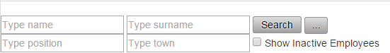
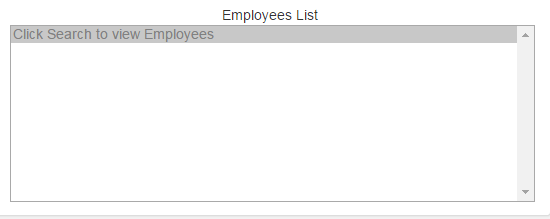

Πατώντας το κουμπί Search στο πεδίο Search Employee, αφου σημπληρώσετε ένα εκ των πεδίων Name,Surname,Position,Town θα εμφανιστούν αυτόματα προς τα κάτω(πεδιο employees list), οι υπαλλήλοι που πληρούν τις συνθήκες των πεδίων αναζήτησης.

Αν δεν επιλέξετε κανένα περιορισμό θα εμφανιστούν όλοι οι υπάλληλοι.
Πατώντας το κουμπί  θα εμφανιστεί στην οθόνη σας η σελίδα Staff Management
θα εμφανιστεί στην οθόνη σας η σελίδα Staff Management
Επιλέγοντας (√) το πεδίο "Show inactive employees", θα εμφανιστούν οι υπαλλήλοι οι οποίοι είναι ανενεργοί.
Επίσης, στο πεδίο Search μπορείτε να πληκτρολογήσετε μια λεξη κλειδί η οποία θα αναζητα τον υπάλληλο σε όλο το πρόγραμμα.
Created with the Personal Edition of HelpNDoc: Generate EPub eBooks with ease